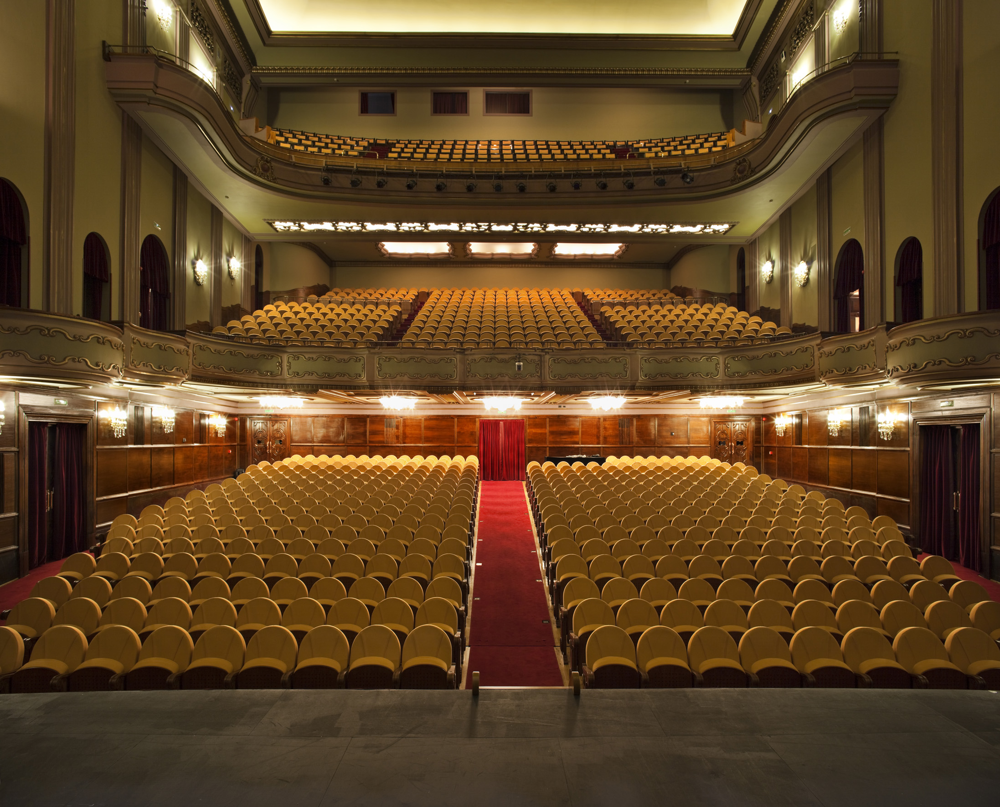
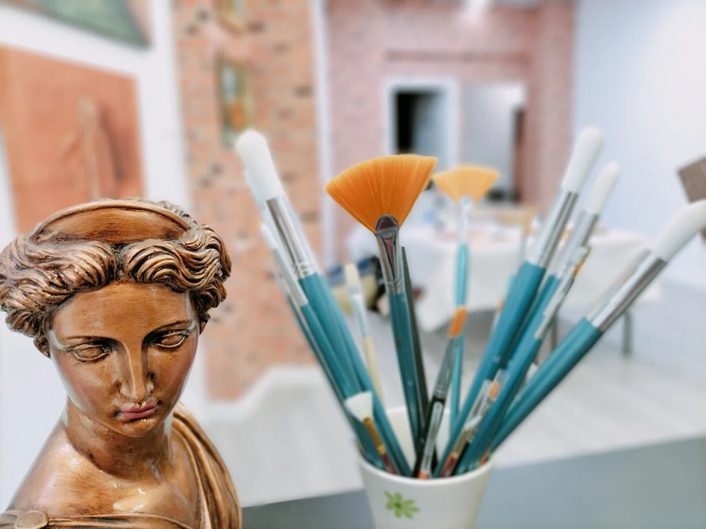
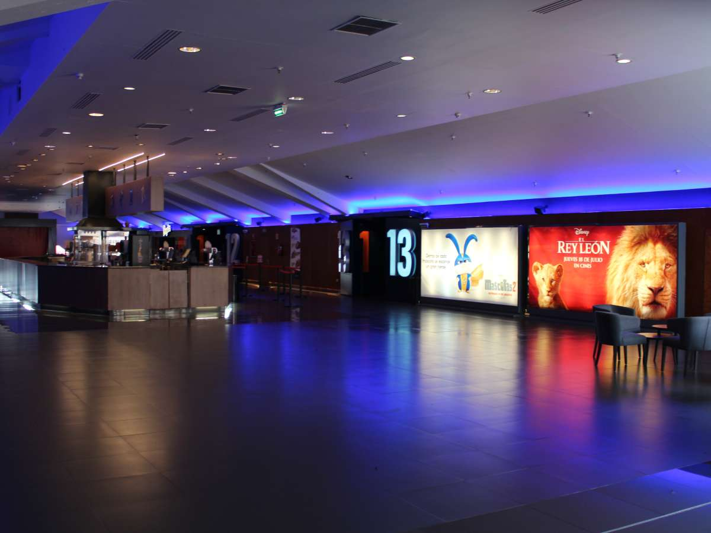

Teatro Asturias ✓
Disfruta de esta obra de teatro en Asturias (24 de enero de 2026). Una increíble puesta en escena llena de emoción y talento local.
👥 3.2k ❤️ 950
Follow +


Descubre los mejores eventos de Asturias. Música, teatro, exposiciones y mucho más en un solo lugar.
9 eventos disponibles

Disfruta de esta obra de teatro en Asturias (24 de enero de 2026). Una increíble puesta en escena llena de emoción y talento local.
👥 3.2k ❤️ 950
Follow +
Es un macrofestival líder de música urbana, pop y electrónica celebrado en La Morgal, Llanera.
👥 45k ❤️ 12k
Follow +
El Musical está basado en los 23 grandes éxitos de ABBA tales como Dancing Queen, Gimme Gimme, Chiquitita o The Winner Takes It All, entre otras.
👥 8.2k ❤️ 2.1k
Follow +
Sala de entretenimiento localizado en el centro de Asturias.
👥 1.5k ❤️ 430
Follow +
Museo de bellas artes con obras desde el medievo hasta el s. XX de artistas españoles, italianos y flamencos.
👥 3.1k ❤️ 850
Follow +
Llega a España la adaptación del clásico de la literatura, basada en la legendaria historia del Conde de Greystoke creada por Edgar Rice Burroughs.
👥 5.4k ❤️ 1.2k
Follow +
Arte realizado por mano de obra gijionesa.
👥 920 ❤️ 185
Follow +
Cadena de modernos cines multisala con películas de estreno, reestreno o espectáculos en directo.
👥 2.3k ❤️ 610
Follow +
Ofrece más de 10 días de conciertos, cómic, videojuegos, gastronomía, deportes extremos y humor.
👥 18k ❤️ 4.5k
Follow +Dale a "Follow +" en cualquier evento para que suba de puesto 🚀

Un recorrido visual por los eventos más emocionantes que Asturias tiene para ofrecer
Crear una plataforma centralizada donde los amantes de la cultura puedan descubrir, explorar y disfrutar de la rica oferta cultural de nuestra ciudad. Queremos que cada día sea una oportunidad para vivir nuevas experiencias.